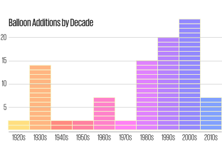
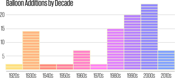

Everything You Ever Wanted To Know About the Macy's Thanksgiving Day Parade
Can you find your favorite balloon in our interactive graphic?
Floats, Rockettes, Al Roker: Bah, who cares? We watch the Macy's Thanksgiving Day Parade for the giant balloons. In 1927, puppeteer Tony Sarg inflated a rubber Felix the Cat to replace the lions and bears Macy's had previously set loose on the streets of New York. Almost a century later, pop culture's finest still take to the skies every Thanksgiving morning, wowing children across the nation. Get into the holiday spirit with our chart tracking the debut of every pop culture balloon. To find out more about each balloon, just click the icons, or try to guess the characters by clicking the button below. Design and story by Gus Wezerek.

